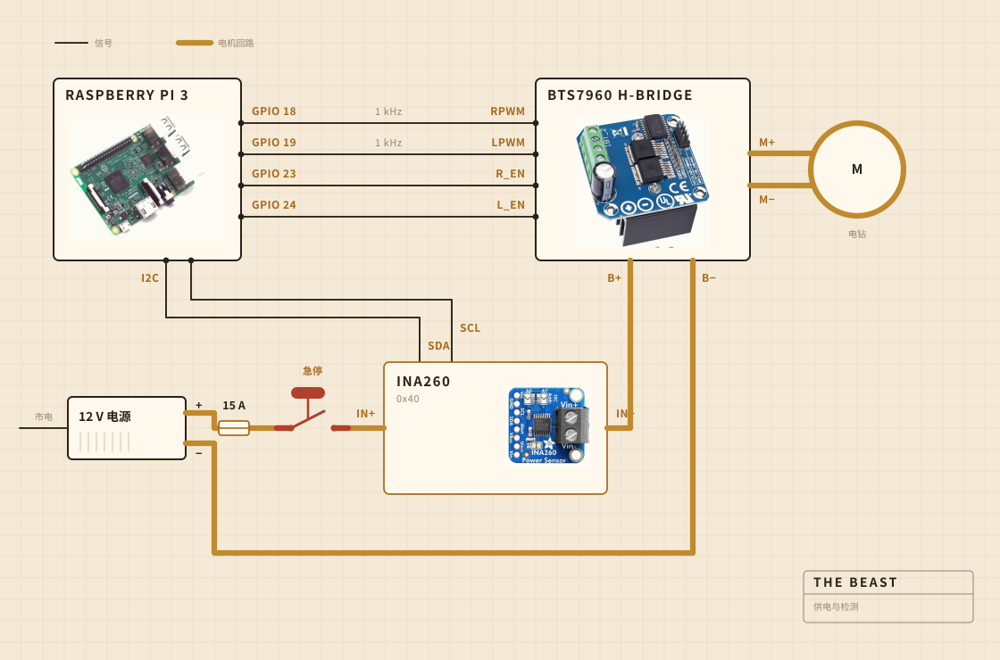

01
它由什么组成
转动的活由一把充电电钻来做。它卡在一个夹具里，夹具拧在一块砧板上，而这块板子就是让所有东西在锅上方对齐的东西。搅拌头是装在钢杆上的硬木，用螺丝拧起来而不是粘起来，我自己做而不是买现成的，原因正在这里。
电子件住在一个透明的保鲜盒里，主要是为了让我能看见有没有什么东西烧起来。记录由一台树莓派负责。那个大大的黄色按钮切断电机的电源，而且软件里没有任何东西能推翻它。

- 电机充电电钻，卡在夹具里，转速远低于全速
- 搅拌头硬木和不锈钢，自己做的，不是买的
- 加热电热板，由调功器通断控制
- 骨架一块砧板和一个塑料保鲜盒
- 供电12 V 开关电源，接市电
- 大脑树莓派，写进一个 CSV 文件
- 感觉搅拌时看电流和电压，熬制时看锅里的探头
- 停止一个大按钮，硬接线
02
它怎么接线
四根信号线和一个粗回路。树莓派算出要多大力、往哪个方向转，真正把电流推出去的是 H 桥，而这两者从不相接。树莓派碰到的任何地方，电流都不超过几毫安。
那个按钮才是值得看的部件。它根本没有接到树莓派上。它串在电机回路里，断开的就是这个回路，所以没有任何软件故障能劝它不要停。树莓派能做的是察觉。如果它要求三成的输出，而传感器回报的电流不到两百毫安，它就推断出回路断了，于是不再要求。
传感器也在同一个回路上，但它的逻辑侧由树莓派供电，所以即使主电源断了它照样回话。整个按钮检测的窍门就在这里。

03
它放在哪里
水槽上方。锅放进槽里，上面盖一块平板，板上开了一个过杆子的洞，跑出来的东西都落在无所谓的地方。
这是没人会放进效果图里的那一部分。在厨房里做东西，一半的功夫花在决定脏乱可以去哪里。

04
它在盯着什么
搅拌的时候，盯的是电机线上的电流和电压，大约每秒采一次，直接写进文件。熬制的时候换成锅里的一支探头，调功器把电热板不断接上又断开，好把数字守住。
没有麦克风，也没有摄像头，这正是我接下来想补上的。到目前为止赌的是，只要负载本身足够找到破乳的那一刻，其余的就可以再等等。

05
它决定什么
两件事。负载是不是升够了又掉够了，可以宣布破乳，以及电热板该开还是该关，才能停在 250 F。
它不知道酸奶是什么。它不知道黄油是什么。它只知道有一个数字升了一阵又落了下去，而这个形状意味着活干完了。

酸奶，搅拌头，破乳，还有看了一个小时的颜色。